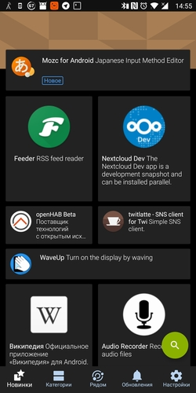
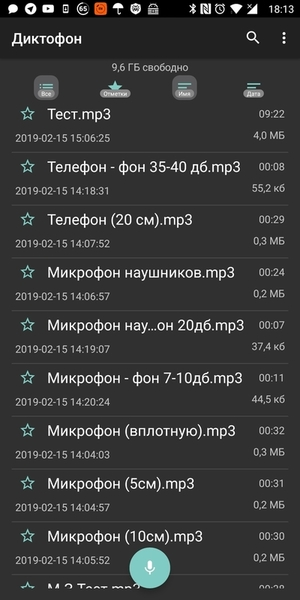
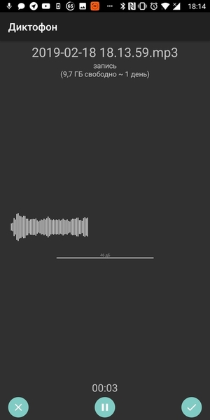

Для чего нужны старые android смартфоны на самом деле

А теперь немного о нестандартном применении стандартных вещей. У моей маман как-то раз полгода тому отказал телефон (MegaFon Login +). Был он куплен в 2015-м году по акции мегафона за 2500 рублей, кажется. Точнее, по акции он продавался за 3990, а я купил у сотрудника мегафона за 2500. Был разлочен с мегафона, затем в корпусе вырезано было дополнительное отверстие, что позволило получить доступ ко второй симкарте. Мегафон просто взял один китайский OEM телефон с непроизводимым названием, заребрендил прошивку, закрыл один слот пластиковой панелью и выпустил это всё на рынок по рекордно низкой цене. В итоге за свои 2500 рублей телефон проработал 4 с лишним года, после чего у него отказал динамик (он и разговорный и не очень - просто меняется сила звука в зависимости от варианта использования). Для маман был приобретён новый телефон, а мегафон до поры/времени выложен на полку. Ремонтировать это чудо бессмысленно, динамик найти и поставить будет стоить почти столько же, за сколько я весь смартфон приобрёл новым, да и производительность у него уже давно не соответствует требованиям времени. Продать такой старый смартфон, с порядочно подсевшим аккумулятором, да ещё и неработающим динамиком тоже вряд ли получится, а если и получится, то за бесценок. Если за него и дадут, то рублей 500, не больше, да и то очень сомнительно.
Но кролики - это не только ценный мех. В конце-концов, смартфон - это отличный ёмкостный дисплей, процессор, память и вообще среда выполнения приложений.
Теги: 3d-printing, android-soft, automatization, hardware, pi, shell
Холивара пост

Я тут на днях послушал выпуск DroiderCast, в котором в числе прочего рассказывали про новый iPad Pro, который показывали на последней выставке WWDC. С восторгом говорили, что теперь к айпаду можно подключать USB накопители и даже мыши и клавиатуры! Ещё отдельного упоминания удостоился тот факт, что теперь на айпаде (о, чудо-то какое!) можно ДАЖЕ просматривать свойства файлов! Ну офигеть! Дожили! Эм... Что? Я был не в курсе, но выходит, что к айпадам нельзя было подключать USB устройства? Если честно, я в полном шоке. Андроид это умеет на минуточку с 2011-го года и версии 2.3.4. У меня и в мыслях не было, что айпады могут этого не уметь. Для меня возможность подключить что-либо к планшету или телефону (по крайней мере для флагманов) являлась чем-то само собой разумеющимся.
Теги: android-soft, mac, мысли-вслух
Про F-Droid и возможность качать видео и аудио с YouTube


На андроиде подавляющее большинство наших соотечественников пользуется приложениями, представленными исключительно в плей маркете. Кто-то что-то слышал о Яндекс.Store, ко-то возможно им даже пользовался, чаще всего это происходит лишь в том случае, если Яндекс.Store был предустановлен на устройство. Но мало кто из моих знакомых слышал об F-Droid. Конечно, он ориентирован на приложения с открытым исходным кодом, для большинства приложений нет скриншотов, а так же там нет бОльшей части того, чем мы привыкли пользоваться и что получаем из плей маркета. Это не замена плей маркету, а скорее приятное дополнение к нему.
Теги: android-soft
Про диктофон для Андроид, который просто работает



Я давно уже хотел сделать отдельный раздел для обзора различных полезных андроид приложений, начну видимо, с этого.
Теги: android-soft